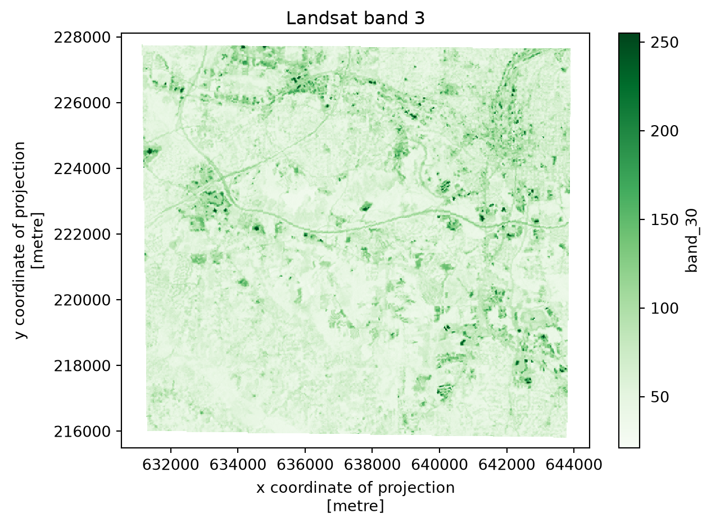

This tutorial shows how to build a raster classification workflow with xarray, rioxarray, and scikit-learn. It follows the same broad steps as the Pyspatialml landcover tutorial: open raster predictors, align them, sample labelled pixels, fit a classifier, and write a classified raster.
The example uses the Landsat bands and labelled-pixel raster bundled with Pyspatialml. You can use the example data without using the Raster class.
Install the additional packages
Xarray and rioxarray are not required dependencies of Pyspatialml. Install them along with Dask to run the chunked prediction example:
python-m pip install xarray rioxarray dask
Open and align the predictor rasters
Each input GeoTIFF becomes a two-dimensional DataArray. rio.reproject_match puts every layer on the same grid as the first layer. This step is useful even when the inputs are expected to be aligned: it makes the target grid explicit.
import numpy as npimport osimport tempfileimport xarray as xrimport rioxarrayimport matplotlib.pyplot as pltfrom pyspatialml.datasets import ncpaths = {"band_10": nc.band1,"band_20": nc.band2,"band_30": nc.band3,"band_40": nc.band4,"band_50": nc.band5,"band_70": nc.band7,}layers = { name: rioxarray.open_rasterio(path, masked=True).squeeze("band", drop=True)for name, path in paths.items()}reference =next(iter(layers.values()))layers = { name: layer.rio.reproject_match(reference)for name, layer in layers.items()}# A Dataset gives each predictor a name. Stack the variables on a feature axis# for scikit-learn, which expects rows=samples and columns=features.predictor_ds = xr.Dataset(layers)predictors = predictor_ds.to_array(dim="feature")predictors = predictors.rio.write_crs(reference.rio.crs)predictors
Plot one predictor to inspect its spatial pattern. Xarray uses the raster’s coordinate labels for the axes.
fig, ax = plt.subplots(figsize=(7, 5))predictor_ds["band_30"].plot(ax=ax, cmap="Greens")ax.set_title("Landsat band 3")plt.show()

If your rasters already share the same CRS, transform, width, and height, you can skip reprojection and open them directly. Reprojecting large rasters has a cost, so check the grids before applying it to a large collection.
Build training data from labelled pixels
Open the labelled-pixel raster and match it to the predictor grid. The example assumes zero represents unlabelled pixels, as in the bundled dataset. Convert the labelled cells to a table, remove missing predictor values, then fit a scikit-learn model.
labels = rioxarray.open_rasterio(nc.labelled_pixels, masked=True)labels = labels.squeeze("band", drop=True).rio.reproject_match(reference)# Extract the labelled pixels and their predictor values by # stacking both the labelled pixel raster and the predictor dataset into a single DataFrame.training = xr.Dataset({"class": labels, **layers})training = training.where(training["class"] >0)training = training.to_dataframe().dropna()feature_names =list(paths)X = training[feature_names].to_numpy()y = training["class"].to_numpy()from sklearn.ensemble import RandomForestClassifiermodel = RandomForestClassifier(n_estimators=200, random_state=42, n_jobs=-1)model.fit(X, y)
In a Jupyter environment, please rerun this cell to show the HTML representation or trust the notebook. On GitHub, the HTML representation is unable to render, please try loading this page with nbviewer.org.
This example uses the labelled raster directly. For vector training points, reproject the GeoDataFrame to the raster CRS, then sample each layer at the point coordinates (for example with DataArray.sel(x=..., y=..., method="nearest")). For polygons, choose an explicit pixel-inclusion rule and aggregate or sample the pixels inside each geometry.
Predict in Dask chunks
Scikit-learn estimators accept two-dimensional arrays, while the predictors are organized as (feature, y, x). The function below moves the feature axis to the end for each spatial chunk, predicts only pixels with valid values, and returns a two-dimensional chunk. Dask delays the work until the output is written or computed.
The example writes to the system temporary directory so rendering the tutorial does not leave generated rasters in the documentation source folder. Set output_path to a project path when you want to keep the result.
Plot the classified result. Pixels without valid predictor values are shown as the nodata background.
Chunk sizes are workload-dependent. Each task needs enough memory for its feature block and the estimator’s temporary arrays. If the prediction does not fit comfortably in memory, use smaller spatial chunks.
How this maps to Pyspatialml
Workflow step
xarray and rioxarray approach
Open and name raster layers
open_rasterio and xr.Dataset
Align grids
rio.reproject_match
Extract labelled pixels
Mask and convert a Dataset to a DataFrame
Apply a scikit-learn model
Reshape feature and spatial dimensions; use apply_ufunc with Dask chunks
Write a georeferenced output
rio.to_raster
This approach gives you xarray’s labeled dimensions and its Dask integration, while making the model-to-raster steps explicit in your code. Pyspatialml provides a more direct raster-stack API for sampling, extraction, and windowed estimator prediction.
Which approach should you use?
Use xarray and rioxarray when you want labeled dimensions, time-series or multidimensional analysis, or Dask-based computation across chunks. This is also a good fit when your project already uses xarray. Use Pyspatialml when you prefer its raster-stack interface and want sampling, extraction, and scikit-learn prediction packaged as raster methods. Both approaches work with GeoTIFFs and NumPy arrays, so you can also use Pyspatialml for a focused step inside a larger xarray workflow.